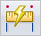

Smart Measure commandMeasures any single element, or measures the distance or angle between any two elements. The elements you select determine how the measurement is made. You can use the Smart Measure command to measure 2D elements in drawings and sketches, and you can measure 3D objects in model documents.
The Smart Measure command works like the Smart Dimension command, except that the measurement is removed when you click to restart or end the command.
How do I
Measure a distanceMeasure a length or a sum of lengths
Measure an area
Measure elements automatically
Look up more details
Smart Measure command barMeasure Distance command
Measure Distance command bar
Measure Area command
Measure Area command bar
Measure Total Length command
Measure Total Length command bar